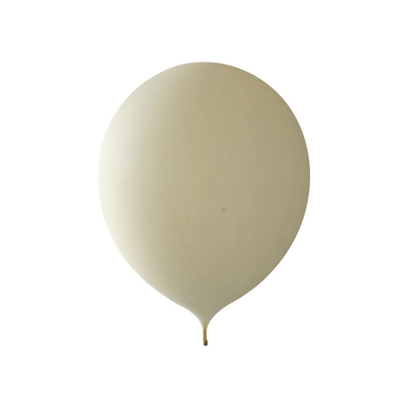

Notícias
O desafio
Com o lançamento da Limiar 1, e a consequente divulgação nas redes sociais da mesma, pelos alunos, docentes e discentes da Escola, foi recebido um convite/pedido de ajuda do Leça Futebol Clube, SAD para levar a camisola oficial do clube, para a época 2025/26, à estratosfera.
Dada a disponibilidade dos elementos do CATI e atendendo à data prevista do lançamento foi possível congregar esforços e apostar nesta nova missão, apostando na recolha de dados e no voo na satisfação do acordado com o clube.
Lançamento
O lançamento foi realizado no dia 21 de julho de 2025, em Touguinhó (41,368058; -8,695440), Vila do Conde, pelas 8h20.

Missão
Descrição Geral
A missão teve como objectivos:
- Traçar o perfil vertical de pressão, temperatura e humidade relativa do ar atmosférico;
- Traçar o perfil vertical de ozono;
- Traçar o perfil da temperatura dentro do payload na subida e na descida;
- Levar a camisola oficial do Leça Futebol Clube, SAD, à máxima altitude possível;
- Registar o voo do balão com câmara 360º.
Objetivos Gerais
A missão teve como objectivos:
- Traçar o perfil vertical de pressão, temperatura e humidade relativa do ar atmosférico;
- Traçar o perfil vertical de ozono;
- Traçar o perfil da temperatura dentro do payload na subida e na descida;
- Levar a camisola oficial do Leça Futebol Clube, SAD, à máxima altitude possível;
- Registar o voo do balão com câmara 360º.
Desenvolvimento
Payload
Foi utilizado um payload hexagonal, de dimensões ????, para a carga instrumentada, sendo inserida no topo a camisola do Leça Futebol Clube, SAD, protegida por uma placa de acrílico.
Considerando a necessidade de filmar a camisola, foi construído um payload menor, para albergar a câmara 360° e a powerbank, de dimensões 175 x150x65 mm. Numas das faces, aberta, foi instalada caixa de acrílico na qual foi montada a câmara, para realizar o filme do voo.


Instrumentação
A carga útil instrumentada incluiu, além do Arduino Uno, o acelerómetro/giroscópio/magnetómetro – MPU9250, o sensor de pressão e temperatura – BMP280, o sensor de temperatura a humidade relativa – DHT22, o sensor de temperatura exterior – sensor DS18B20, Gravity sensor de ozono, soldados numa placa de circuito impresso (PCB) projectada e executada numa CNC entretanto adquirida.
Os dados foram armazenados num cartão microSD.


Sistema de Recuperação - GPS
O balão utilizado foi o balão meteorológico 3000, da empresa StratoFligths GmbH&Co. KG, com massa de 3000 g, de borracha natural e latex, capaz de suportar condições climatéricas agrestes até uma altitude máxima aproximada de 40000 m, apresentando um diâmetro médio de 14 m na altura do rebentamento. A velocidade de subida recomendada foi de 4 a 5 m/s e a carga máxima recomendada é de 3000 g.

Testes
Calibrações
[Informações sobre calibrações realizadas]
Dados
Gráficos
hoje é dia antes da greve de amanhã

hoje é dia antes da greve de amanhã

hoje é dia antes da greve de amanhã

Contactos
Se tiver alguma dúvida ou quiser saber mais sobre o projeto LIMIAR2, entre em contacto connosco:
- 📧 E-mail: cati@aecarlosamarante.tp
- 📞 Telefone: 253 618 001
- 🎥 YouTube: @CATIAECA2026
- 📸 Instagram: xxxx
- 💼 LinkedIn: yyyy